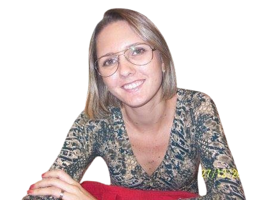

Representar
Levar as demandas dos estudantes aos espaços de diálogo e decisão.
Somos o Centro Acadêmico de Arquivologia da UEPB, Campus V. Um espaço de representação estudantil, diálogo e construção coletiva.
Prazer, somos o CAARQ!
Calma! Calma! O CAARQ não é nenhuma organização superinalcançável e secreta. Pelo contrário!
Somos a representação estudantil do curso de Arquivologia da Universidade Estadual da Paraíba (UEPB), Campus V. Somos estudantes que compartilham o compromisso com a formação acadêmica, a valorização da Arquivologia e a construção de uma universidade mais participativa, democrática e acolhedora.
O Centro Acadêmico é um espaço de representatividade, diálogo, organização coletiva e transformação. É onde as vozes dos estudantes podem ser ouvidas, suas demandas podem ganhar força e suas ideias podem se transformar em iniciativas que contribuam para a vida universitária.
Levar as demandas dos estudantes aos espaços de diálogo e decisão.
Criar oportunidades de convivência, troca e colaboração.
Valorizar a Arquivologia, a memória e o acesso à informação.
Uma homenagem que é também compromisso
O nome do nosso Centro Acadêmico homenageia a professora Bríggida Rosely de Azevêdo Lourenço, que lecionou no curso de Arquivologia da UEPB, Campus V, em João Pessoa.

Nascida em 13 de julho de 1983, Bríggida formou-se em Biblioteconomia pela Universidade Federal da Paraíba (UFPB) e concluiu o mestrado em Ciência da Informação em 2011. Foi professora substituta de Arquivologia na UEPB, em João Pessoa, e é lembrada por sua dedicação à educação e pelo carinho com que tratava as pessoas.
Em 19 de junho de 2012, sua vida foi interrompida aos 28 anos, vítima de feminicídio cometido por seu ex-companheiro. Sua morte mobilizou familiares, colegas, estudantes e a comunidade acadêmica na luta por justiça e no enfrentamento da violência contra as mulheres.
Em 2014, o Centro Acadêmico de Arquivologia da UEPB foi fundado levando seu nome. A homenagem preserva sua memória e reafirma nosso compromisso com a vida, a dignidade, os direitos das mulheres e o combate à violência de gênero.
Ao levar o nome de Bríggida, reconhecemos que a Arquivologia não trata apenas de documentos, mas também de memória, identidade, história e direito à verdade. Sua lembrança permanece no nosso espaço universitário e no compromisso com uma sociedade mais justa.
Tudo em um só lugar
Equipe, projetos, atividades e informações do Centro Acadêmico conectadas a partir desta página.
Participação que sai do papel
O Centro Acadêmico trabalha para fortalecer a experiência universitária, apoiar iniciativas dos estudantes e manter os canais de comunicação abertos.
Vamos conversar ↗Acompanhe de perto
Este espaço pode reunir avisos, eventos, projetos e notícias do curso. Em breve, as publicações poderão ser atualizadas conforme a rotina do CAARQ.
O Centro Acadêmico é feito pela participação estudantil. Acompanhe por aqui os próximos avisos e iniciativas.
Um campo que organiza, preserva e amplia o acesso aos registros que contam nossas histórias.
Gente que faz acontecer
Conheça as pessoas que representam os estudantes de Arquivologia e visite nosso arquivo de gestões anteriores.
Carregando gestão atual…
Projetos e iniciativas do CAARQ
Acompanhe as ações em andamento, descubra os próximos encontros e explore nossos projetos concluídos.
Carregando atividades…
Vista essa ideia
Um espaço para reunir produtos, materiais e itens do Centro Acadêmico. Confira as novidades, as fotos e os produtos oficiais da LOCA, a lojinha do nosso Centro Acadêmico.
Conheça a LOCA ↗Escuta e participação estudantil
A Ouvidoria do Centro Acadêmico de Arquivologia é um canal para estudantes da UEPB, Campus V, enviarem reclamações, sugestões, críticas, relatos de problemas, elogios, dúvidas e solicitações relacionadas à vida acadêmica e à atuação do CAARQ.
O objetivo é compreender as necessidades dos estudantes, identificar questões que mereçam atenção e contribuir para melhorias na comunidade acadêmica.
Acessar OuvidoriaO formulário abre em uma nova aba. Seu sistema de protocolos continua funcionando por lá.
O preenchimento é voluntário. Você pode se identificar, caso deseje receber um retorno, ou enviar uma manifestação sem informar seu nome.
Descreva a situação com clareza e respeito, evitando dados pessoais desnecessários. Os relatos poderão gerar encaminhamentos aos setores competentes.
As respostas ficam restritas às pessoas responsáveis pela Ouvidoria e serão tratadas com discrição. Quando necessário, informações poderão ser encaminhadas com os cuidados adequados, preferencialmente sem identificação do estudante.
Esta iniciativa do Centro Acadêmico não substitui os canais oficiais da universidade.
Chega mais!
Quer sugerir, perguntar ou acompanhar o que acontece no curso? Fale com o Centro Acadêmico.
Abrir Ouvidoria ↗Área dos Membros (acesso autorizado) ↗